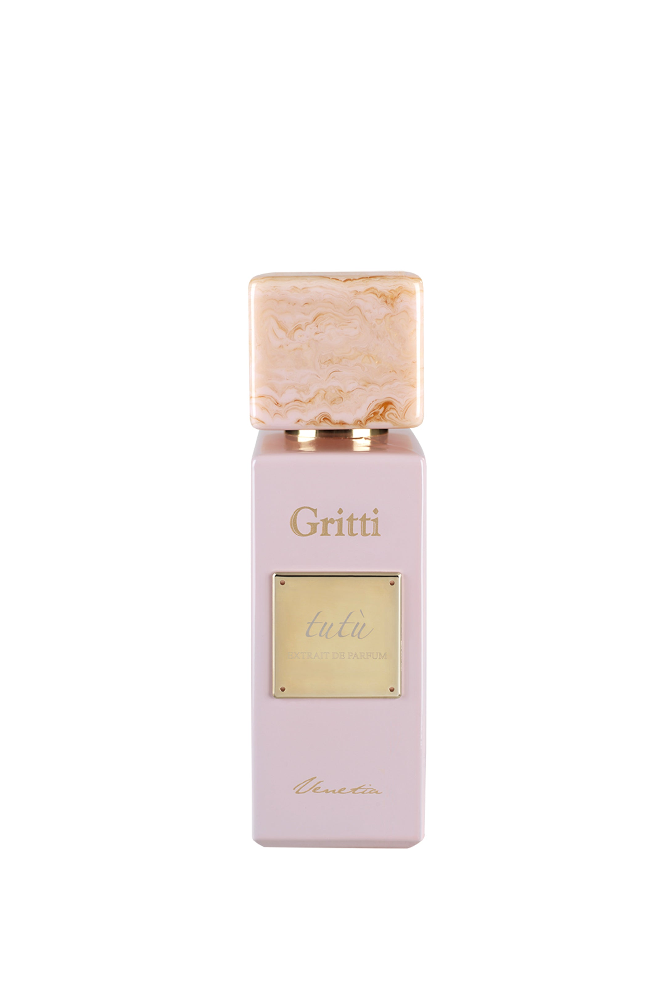

Gritti Tutù — White Collection
€ 260ריכוז ותכולה: Extrait de Parfum • 100 מ"ל (בית הבישום Gritti Venetia)
תווים עליונים: אשכולית, דומדמניות שחורות, קוקוס ושמפניה ורודה
תווי לב ובסיס: יסמין, ורד, הליוטרופ ותווים פודרתיים • פטל, וניל, ענבר ומושק